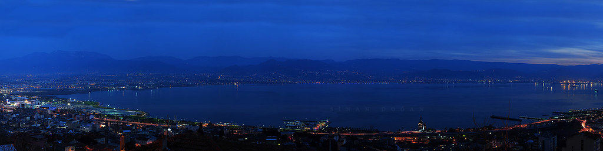

Sadece Kocaeli'nin değil, Türkiye’nin de en büyük şehir içi parklarından biri olan ve denize sıfır konumda inşa edilen Seka Park, eski Seka Kağıt Fabrikası arazisinde 580 dönümlük bir yeşil alanı kapsıyor. Etkileyici deniz manzaraları eşliğinde yürüyüşlere çıkabileceğiniz parkurların yanı sıra kır bahçeleri, kafeler, balık restoranları, mesire alanları ile ilgi çeken devasa parkta çocuklar için geniş oyun merkezleri, kaykay pisti, sergi salonları, sanat atölyeleri, açık ve kapalı spor sahaları gibi pek çok olanak bulabilirsiniz. Panoramik fotoğraflar çekebileceğiniz seyir teraslarının yanı sıra çocuklarınızla eğlenceli zaman geçirebileceğiniz uçurtma tepeleri ve yıl boyu konserlerin düzenlendiği etkinlik alanlarıyla da ilgi gören Seka Park, Kocaeli'nde güzel zaman geçirmek için ilk uğramanız gereken yerler arasında.
Sadece Kocaeli’nin değil, İstanbul ve Bursa gibi komşu şehirlerin de en sevilen kış tatil merkezlerinden biri olan Kartepe Kayak Merkezi, şehre sadece 32 kilometre uzaklıkta. Kartepe Dağı eteklerinde deniz seviyesinden yaklaşık 1600 metre yükseklikte kurulan kayak merkezi; dünya standartlarındaki pistleri, kayak ekipmanları kiralayabileceğiniz tesisleri, dünya mutfaklarından lezzetler sunan restoranları ve kaliteli otelleriyle her kış binlerce insanı ağırlıyor. Her yaş grubu için kayak ve snowboard eğitimleri alabileceğiniz Kartepe Kayak Merkezi’nde çocuklara özel pistler ve geniş oyun alanları da bulunuyor. Seyir teraslarından büyüleyici kar manzaraları izleyebileceğiniz kayak merkezi; tatiller, yılbaşı ve bayramlarda da tamamen doluyor.
Sadece Kocaeli'nde değil, Marmara Bölgesi'nde düzenlenen doğa gezileri ve fotoğraf safarilerinin en sevilen adreslerinden biri olan Ballıkayalar Kanyonu’nun çevresi 1995 yılında milli parkı ilan edilerek koruma altına alındı. 500'e yakın vahşi hayvan türü ve yüzlerce kuş türüne ev sahipliği yapan Ballıkayalar Kanyonu ve Tabiat Parkı, 850 hektarlık büyük bir alanı kapsıyor. 1,5 kilometre boyunca uzanan devasa sarp kaya duvarları ve zengin bitki çeşitliliği ile Türkiye'nin en güzel yürüyüş parkurlarından biri olarak gösterilen kanyon, her zorluk derecesine göre düzenlenmiş parkurlarıyla profesyonel yürüyüşleri de yılın her mevsimi kendine çekiyor. Şelaleleri, dereleri ve göletlerinde onlarca çeşit su kuşunun harika fotoğraflarını çekebileceğiniz; özellikle ilkbahar ve sonbahar aylarında kartpostal güzelliğinde manzaralara şahit olabileceğiniz Ballıkayalar Kanyonu, İstanbul'a olan yakınlığından dolayı da yaz aylarında temiz havada dinlenmek isteyen tatilciler tarafından sıkça ziyaret ediliyor. Kaya tırmanma, ATV safarileri, bisiklet gezileri ve kamp yapmak için Marmara Bölgesi’ndeki en güzel yerlerden biri olan Ballıkayalar Kanyonu ve Tabiat Parkı’nı kendi başınıza veya rehberli turlarla keşfe çıkabilirsiniz.